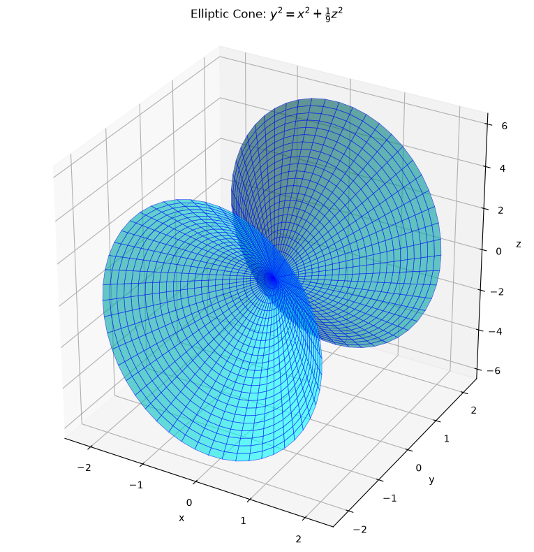
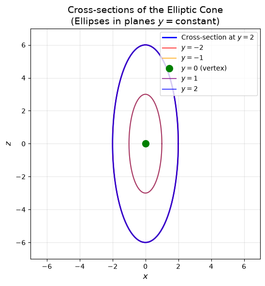
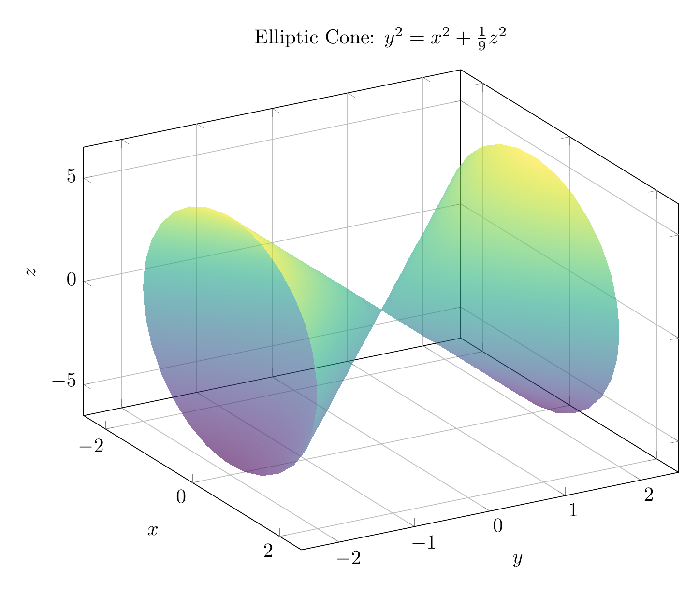
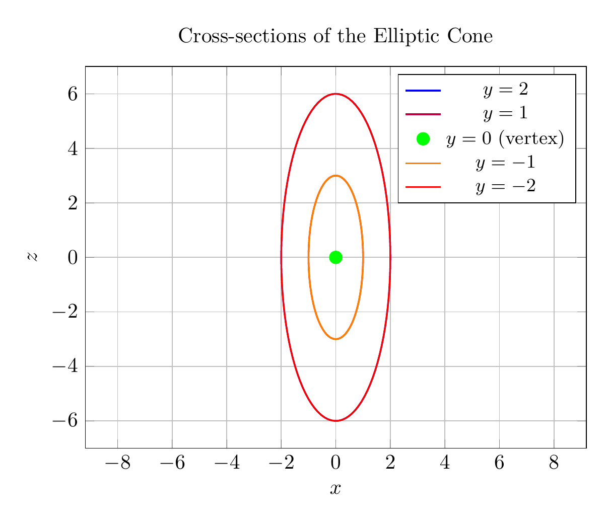

Path: mcma-Qwen3.5-397B-A17B/calculus-12.6.29/chat_20260823_213329_132782_utc_0800
Problem
Please solve the math problem in the image.

End of problem
Answer
# Solution: Classifying the Quadric Surface
## Problem
Reduce the equation to one of the standard forms, classify the surface, and sketch it:
$$y^2 = x^2 + \frac{1}{9}z^2$$
## Step 1: Rewrite in Standard Form
The given equation is:
$$y^2 = x^2 + \frac{1}{9}z^2$$
To put this in standard form, we rearrange the terms:
$$y^2 - x^2 - \frac{z^2}{9} = 0$$
Or equivalently:
$$\frac{y^2}{1} - \frac{x^2}{1} - \frac{z^2}{9} = 0$$
This can be written as:
$$\frac{y^2}{1^2} = \frac{x^2}{1^2} + \frac{z^2}{3^2}$$
## Step 2: Identify the Surface Type
The standard form of a **cone** (specifically an elliptic cone) is:
$$\frac{y^2}{c^2} = \frac{x^2}{a^2} + \frac{z^2}{b^2}$$
Comparing our equation:
- $a^2 = 1$, so $a = 1$
- $b^2 = 9$, so $b = 3$
- $c^2 = 1$, so $c = 1$
Since our equation matches this form exactly, the surface is an **elliptic cone** with its axis along the $y$-axis.
## Step 3: Classification
**Classification: Elliptic Cone**
Key characteristics:
- The vertex is at the origin $(0, 0, 0)$
- The axis of the cone is the $y$-axis
- Cross-sections perpendicular to the $y$-axis (planes $y = k$) are ellipses
- The semi-axes of the elliptical cross-sections are:
- In the $x$-direction: $|k|$
- In the $z$-direction: $3|k|$
- The ratio of the $z$-axis to $x$-axis in each elliptical cross-section is $3:1$
## Step 4: Analysis of Cross-Sections
1. **Horizontal cross-sections** ($y = k$):
- When $y = k$, we get $k^2 = x^2 + \frac{z^2}{9}$
- This is an ellipse: $\frac{x^2}{k^2} + \frac{z^2}{9k^2} = 1$
- The ellipse has semi-axes $|k|$ and $3|k|$
2. **Cross-section in the $xy$-plane** ($z = 0$):
- $y^2 = x^2$, which gives $y = \pm x$ (two intersecting lines)
3. **Cross-section in the $yz$-plane** ($x = 0$):
- $y^2 = \frac{z^2}{9}$, which gives $y = \pm \frac{z}{3}$ (two intersecting lines)
## Conclusion
The surface $y^2 = x^2 + \frac{1}{9}z^2$ is an **elliptic cone** with vertex at the origin and axis along the $y$-axis. The elliptical cross-sections have a $3:1$ ratio between the $z$ and $x$ semi-axes.
$\boxed{\text{Elliptic Cone}}$
---


\documentclass[border=10pt]{standalone}
\usepackage{pgfplots}
\pgfplotsset{compat=1.18}
\usepgfplotslibrary{colormaps}
\begin{document}
\begin{tikzpicture}
\begin{axis}[
view={60}{30},
xlabel={$x$},
ylabel={$y$},
zlabel={$z$},
title={Elliptic Cone: $y^2 = x^2 + \frac{1}{9}z^2$},
domain=0:360,
y domain=-2:2,
samples=30,
samples y=20,
colormap/viridis,
grid=major,
width=12cm,
height=10cm,
zmin=-6.5,
zmax=6.5,
xmin=-2.5,
xmax=2.5,
ymin=-2.5,
ymax=2.5,
]
% Parameterization: x = v*cos(u), y = v, z = 3*v*sin(u)
\addplot3[surf, opacity=0.6, shader=interp] ({y*cos(x)}, {y}, {3*y*sin(x)});
\end{axis}
\end{tikzpicture}
\end{document}

\documentclass[border=10pt]{standalone}
\usepackage{pgfplots}
\pgfplotsset{compat=1.18}
\begin{document}
\begin{tikzpicture}
\begin{axis}[
xlabel={$x$},
ylabel={$z$},
title={Cross-sections of the Elliptic Cone},
domain=0:360,
samples=100,
axis equal,
grid=major,
width=10cm,
height=8cm,
xmin=-7,
xmax=7,
ymin=-7,
ymax=7,
legend style={at={(0.98,0.98)}, anchor=north east, font=\small}
]
% Cross-section at y = 2 (blue)
\addplot[blue, thick] ({2*cos(x)}, {6*sin(x)});
\addlegendentry{$y=2$}
% Cross-section at y = 1 (purple)
\addplot[purple, thick] ({1*cos(x)}, {3*sin(x)});
\addlegendentry{$y=1$}
% Cross-section at y = 0 (point)
\addplot[green, only marks, mark=*, mark size=3pt] coordinates {(0,0)};
\addlegendentry{$y=0$ (vertex)}
% Cross-section at y = -1 (orange)
\addplot[orange, thick] ({1*cos(x)}, {3*sin(x)});
\addlegendentry{$y=-1$}
% Cross-section at y = -2 (red)
\addplot[red, thick] ({2*cos(x)}, {6*sin(x)});
\addlegendentry{$y=-2$}
\end{axis}
\end{tikzpicture}
\end{document}

End of answer